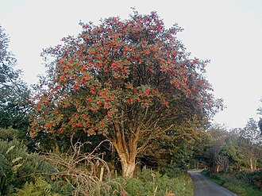
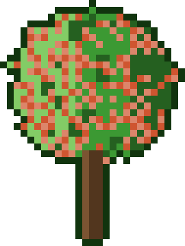

Sorbus — Rowan (Sorbus)
The wiry mountain sentinel who survives where nothing else will — ancient folklore calls it a witch-ward, and its fiery berries feed half the bird population through winter.
Combat flavor
Sorbus is a resilient support fighter — its high-altitude toughness translates to strong defensive stats, while its berry-laden boughs can trigger a "Winter Feast" aura that sustains allied units. The folklore ward-against-evil could manifest as a magic-resistance buff.
Real-world facts
Typical / max height5–15 m typical; up to 25 m in lowland conditions
Lifespan120–200 years
Wood~737 kg/m³ air-dry (S. aucuparia); Janka ~7,520 N (estimate) — described as hard, tough, and heavy, comparable to European hop-hornbeam
Growth speedmedium
Ecology / notable traitsThrives at high altitudes where few trees survive; berries are a vital winter food source for thrushes, waxwings, and dozens of bird species; flowers provide nectar for insects; deeply embedded in Celtic folklore as a protective tree against evil spirits; not invasive; no allelopathy or toxicity to mammals (berries mildly toxic raw due to parasorbic acid, neutralised by cooking or frost)
Gallery

